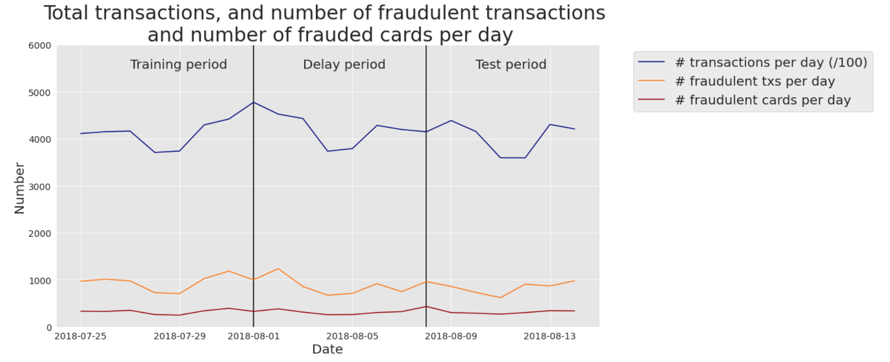
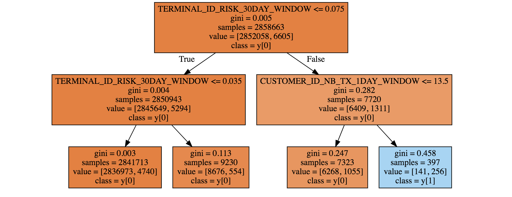
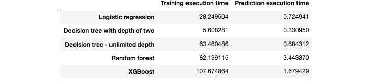

Real-world data
Contents
5. Real-world data#
The previous section illustrated how simple data preprocessing and supervised learning techniques can be used to design a baseline fraud detection system. The presented results relied on reproducible, but simulated data. Let us now apply the exact same methodology with real-world transaction data. Due to confidentiality reasons, the data used in this section cannot be shared. While the results presented in this section cannot be reproduced, they however provide insights into the performances that would be obtained in a real-world setting.
The dataset used was provided By Worldline, and is similar in nature to the datasets used in the publications referenced on our ResearchGate page - Joint collaboration: MLG ULB and Worldline.
5.1. Training and test sets#
More specifically, our real-world data are e-commerce transactions for Belgium from 2018. The number of daily transactions is around 400000. The number of daily fraudulent transactions was around 1000, giving a ratio of fraudulent transactions of around 0.25%. The number of daily compromised cards was slightly above 300: each compromised card caused an average of 3 fraudulent transactions per day. Fig. 1 summarises these statistics on a daily basis for the period 2018-07-25 to 2018-08-14.

Fig. 1. Real-world transaction data. Number of transactions per day (/100), fraudulent transactions per day, and compromised cards per day. Period: 2018-07-25 to 2018-08-14.
5.2. Model training: Decision tree#
We first trained a decision tree of depth two. The resulting tree is given in Fig. 2. It is worth noting that the fraud detection rules uncovered by the decision tree differ from the ones obtained on simulated data. The main fraud pattern uncovered by the tree (blue leaf at the bottom right) consists of transactions that occurred on a recently compromised terminal (TERMINAL_ID_RISK_30DAY_WINDOW>0.075), and for which the customer had realized a large number of transactions in the previous 24 hours (CUSTOMER_ID_NB_TX_1DAY_WINDOW>13.5). This rule actually relates to a common fraud behavior: Fraudsters usually try to carry out as many transactions as they can when they manage to compromise a credit card, thus increasing the number of transactions carried out in the last day.

Fig. 2. Decision tree of depth two, obtained using one week of real-world data.
5.3. Performances using standard prediction models#
We then ran the same five training algorithms as in the previous section: Logistic regression, decision trees of depth two and unlimited depth, random forest, and XGBoost. The performance results on the test set are reported in Fig. 3.

Fig. 3. Fraud detection performances obtained with five standard machine learning algorithms on the test set.
The AUC ROC of all the models is higher than 0.5, meaning that they all perform better than a random classifier. For the three performance metrics, the worst model is the decision tree with unlimited depth (AUC ROC close to 0.5, meaning that it performs not much better than a random classifier). The best models are XGBoost and logistic regression, depending on which performance metric is chosen. For AUC ROC and AP, XGBoost provides the best performances. For CP@100, the best performance is provided by the logistic regression model.
It must be noted that these results are preliminary, and only reflect performances obtained on a small subset of the data, without any tuning of the model parameters. Still, it is remarkable that the detection rates of these baseline models, in particular for XGBoost and logistic regression, are well above those of a random classifier. Recalling that the proportion of fraudulent transactions is only 0.25%, the card precision@100 of a random classifier should be around 0.0025 (that is, less than one compromised card detected per day). A simple logistic regression model boosts the CP@100 to 0.15, meaning that on average, this classifier allows correctly detecting, every day, 15 compromised cards out of the 100 most suspicious cards identified by the prediction model.
Besides the prediction performances on the test set, we also computed the prediction performances on the training set. They are reported in Fig. 4. It is worth noting that two models provide perfect predictions: The decision tree with unlimited depth, and the random forest (AUC ROC of 1). These results were also observed for the synthetic data (see previous section, Performances using standard prediction models), and reflect the overfitting phenomenon. The models the least sensitive to overfitting are the logistic regression model, and the decision tree with depth 2. It makes sense that the training metrics of tree-based models with unlimited depth (Random Forest, Decision Tree) achieve perfect detection because, during training, these models will split data recursively until obtention of pure leaves.

Fig. 4. Fraud detection performances obtained with five standard machine learning algorithms on the training set.
We finally report the execution times, for training and predictions, of these five predictions models. The results are presented in Fig. 5. It is worth noting that the execution times are much higher than with the simulated dataset. In particular, the random forest and XGBoost models were run using a server with 20 cores. Their training execution times are therefore close to 100 times longer than logistic regression. XGBoost also has an implementation optimized for GPU that could still speed up training by one order of magnitude.

Fig. 5. Execution times for the training and predictions of the five machine learning algorithms.